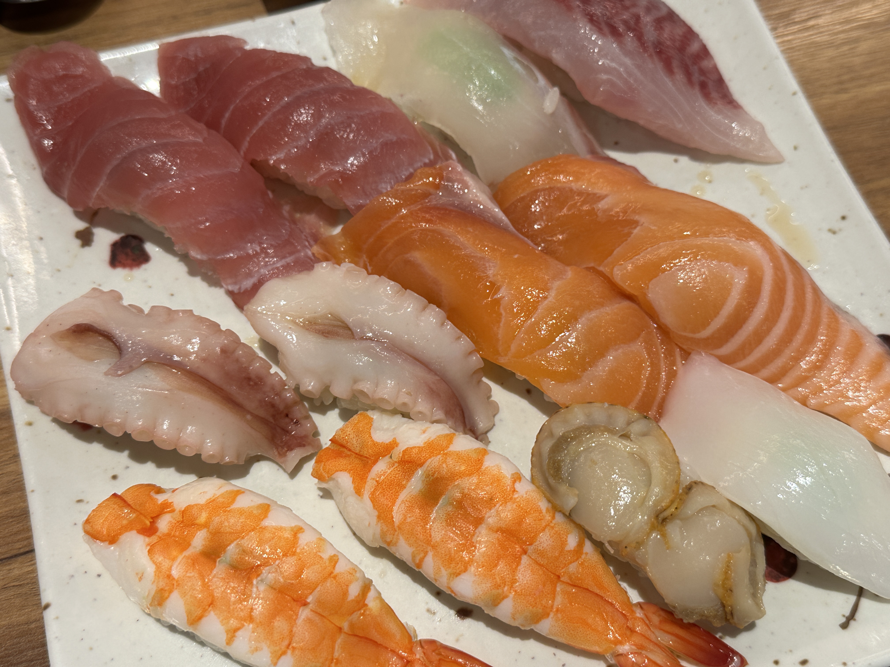
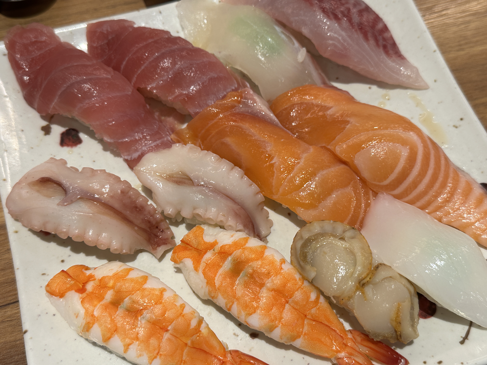
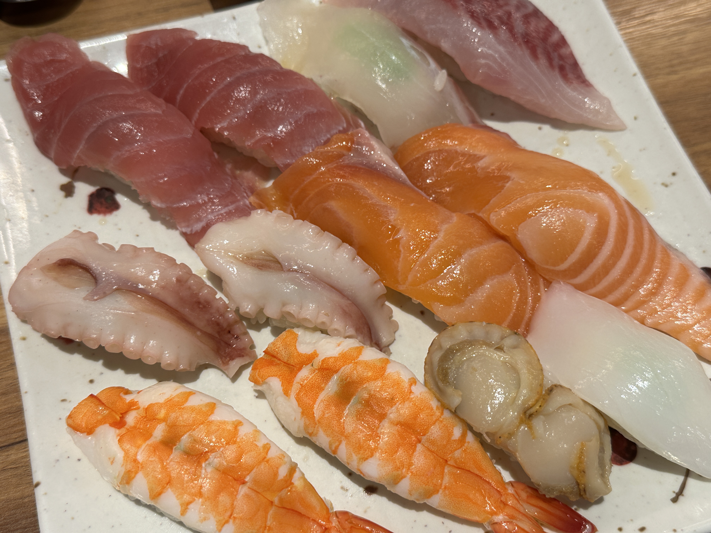

내가 좋아하는 요리

 

안녕하세요! 저는 환노입니다! 저는 게임을 정말 좋아합니다. 요즘은 롤토체스랑 스팀 게임인 리썰컴퍼니에 푹 빠져 있어요. (사실 우테코 미션하느라 최근엔 못 했습니다... 🥲) 앞으로도 재미있는 게임을 찾아다니며 플레이할 예정이고, 우테코 수료 후엔 다시 게임 삼매경에 빠질 계획입니다! 🎮🔥 우테코 기간 동안엔 열심히 공부해서 멋진 개발자가 되는 게 꿈입니다~!

고등학교 시절, 학업에 지칠 때마다 들었던 노래입니다! 이 노래의 화자는 외롭고 갈 곳이 없는 존재입니다. Lost Boy라는 표현은 단순히 길 잃은 소년이 아니라, 삶에서 소속감을 느끼지 못하는 상태를 상징해요. 가사를 잘 들어 보면 피터팬, 네버랜드가 나오는데, 화자는 현실에서 도피하고 싶은 마음, 새로운 희망을 찾는 과정을 네버랜드에 비유하고 있어요. 삶에서 방황하는 사람. 그리고 현실에서의 도피처인 네버랜드. 현실의 어려움에서 벗어나고 싶은 욕망을 표출하는 노래예요! 저는 입시라는 현실에서 이 노래를 들으며 현실 도피를 했답니다~
제 인생 첫 공포영화인 애나벨 시리즈입니다! (진짜 애나벨 넣으면 무서우니까 짤로 대체하였습니다 😅) 인시디어스와 컨저링으로 유명한 제임스 완이 제작에 참여한 실화를 소재로 만든 컨저링 유니버스 세계관의 공포영화예요. 영화관에서 공포영화를 볼 때 짜릿함은 말로 표현할 수 없죠. 그 짜릿함에 반해 공포영화에 푹 빠졌답니다.